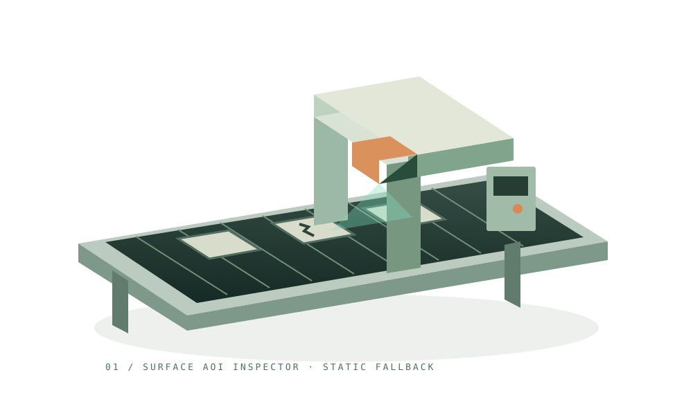

視覺檢測實務
輸送帶、相機與檢測畫面共用同一個工件狀態。切換正常品、刮痕與人工複核，同步改變模型與監看結果。
閱讀 AOI 原始測試條件 ↗2026_8月合輯 · 09 INTERACTIVE PROJECTS
選擇由系統逐站解說、實際操作每個情境，或保留自己的速度，自由探索九座互動場景。
01 / 視覺檢測實務
跟著工件通過檢測站，了解影像如何轉換成品質判斷。切換正常、刮痕與待複核情境，觀察示意缺陷標記與判定結果。

從看見異常，到安全反應。
繼續滾動，光點將組成下一座場景。門架內的相機取得影像，照明讓表面更清楚；程式標出可疑區域，再由規則或人員確認。此處為同步合成示意。
THE SYSTEM BEHIND THE SCENE
整合九項 AI、資料分析與工程應用專案，透過持續運作的 3D 場景與互動監看，呈現各項技術的處理流程、判斷依據與應用限制。
輸送帶、相機與檢測畫面共用同一個工件狀態。切換正常品、刮痕與人工複核，同步改變模型與監看結果。
閱讀 AOI 原始測試條件 ↗正常時機械臂持續運作。模擬力量超限或心跳遺失後，機械臂停止，畫面保留原因；選擇正常運轉才會復歸。
閱讀 RTSafe 設計與限制 ↗固定合成批次有 11 筆：7 筆合格、3 筆隔離、1 筆去重。來源與倉儲淨額各 110.0000；試著注入金額差異，或重跑相同批次，觀察發布與新增筆數。
閱讀 Retail 原始能力與限制 ↗引用通過才交付示意回答；證據不足轉人工；集合未授權時不讀取文件。可逐步查看權限、檢索、驗證與分流。這是原創離線教學腳本，不是模型推論。
閱讀 KnowledgeOps 能力與限制 ↗事件串起唯讀遙測、維護紀錄與 SOP。證據齊全交付摘要；高風險或工具嘗試耗盡轉人工。所有情境外部動作均為 0，不因動畫完成而自動核准。
閱讀 OpsFlow 能力與限制 ↗七日原創基準共 700 件；人為上調 25% 得到 875 件，下調 20% 得到 560 件。逐日比較時，立體柱與圖表共用同一數列。倍率是情境假設，不是促銷因果效果。
閱讀 Demand Planning 能力與限制 ↗合成持倉展示均分、集中與缺漏三種資料狀態。四個發行人占比直接對應環形立柱；單一 70% 觸發本頁 60% 教學門檻。資料缺漏時不補值、不輸出集中度結論，也不產生交易。
閱讀 OpenFund 能力與限制 ↗固定六點阻抗樣本比較 50 mΩ 示意門檻：峰值 46 mΩ 為 PASS，110 mΩ 為 FAIL。工作逾時展示最多兩次派工嘗試，沒有結果時不補造曲線。此處未執行 RLC／SPICE、PCB DRC 或實際工作節點。
閱讀 SimOps 能力與限制 ↗policy-v2 來源快照：NF4 已發布、Q8 為 previous-good、Q4 被阻擋。Q4 的 event F1 比 Q8 下降 10.73 個百分點，超過 1.5 個百分點上限；檔案較小不代表品質通過。NF4 與 GGUF 生成契約不同，不做同條件推論比較。
閱讀評測與登錄紀錄 ↗核對 run ID 與 artifact hash ↗閱讀外部泛化限制 ↗展示邊界：工件、瑕疵、感測數值與交易批次皆為合成示意，不連接相機、實體設備或資料庫。Retail 使用重新編寫的 11 筆教學資料，對帳以整數分計算；不等同執行原專案 ETL。原專案實測請閱讀證據文件；畫面不呈現虛構準確率。KnowledgeOps 為固定離線腳本，不呼叫模型、不實施正式 ACL；示意文件不是組織政策。OpsFlow 同樣為原創固定腳本，未執行真實工具、重試請求或設備處置。Demand Planning 使用固定七日序列與倍率計算，未在頁面執行訓練、回測、區間估計或補貨最佳化。OpenFund 為原創四發行人合成持倉；不連線公開申報、不執行 ML／DL、PSI 漂移或交易，不提供買賣建議。SimOps 使用原創固定阻抗樣本與逾時腳本，不是原專案求解結果、量測或正式 SI/PI 簽核。ModelForge 的評測值為原專案 policy-v2 本機實測文件快照，不是本頁新測結果；原資料為合成分布，非真實工廠準確率。NF4 的 GGUF 大小未提供，不補零。網頁不訓練、不推論、不改寫 registry，也不以新版外部校準結果覆寫舊契約。模型轉場可反向滾動還原。
THE COLLECTION / 09 PROJECTS
目前完成 9／9 座 3D 互動場景。
八段可逆光點轉場，串起九種能力。
每一站都可停留、操作與追查來源。